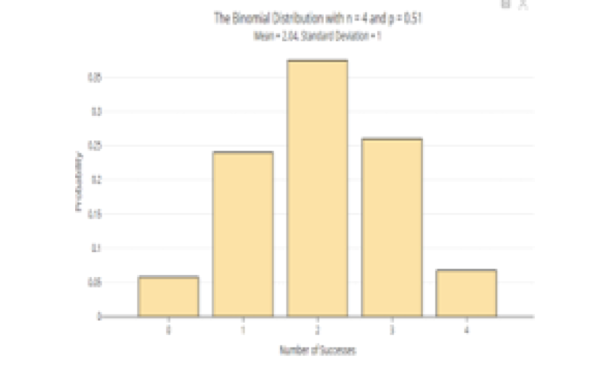
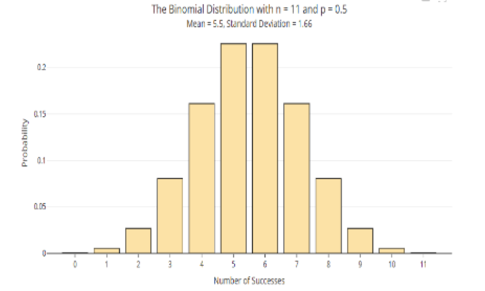
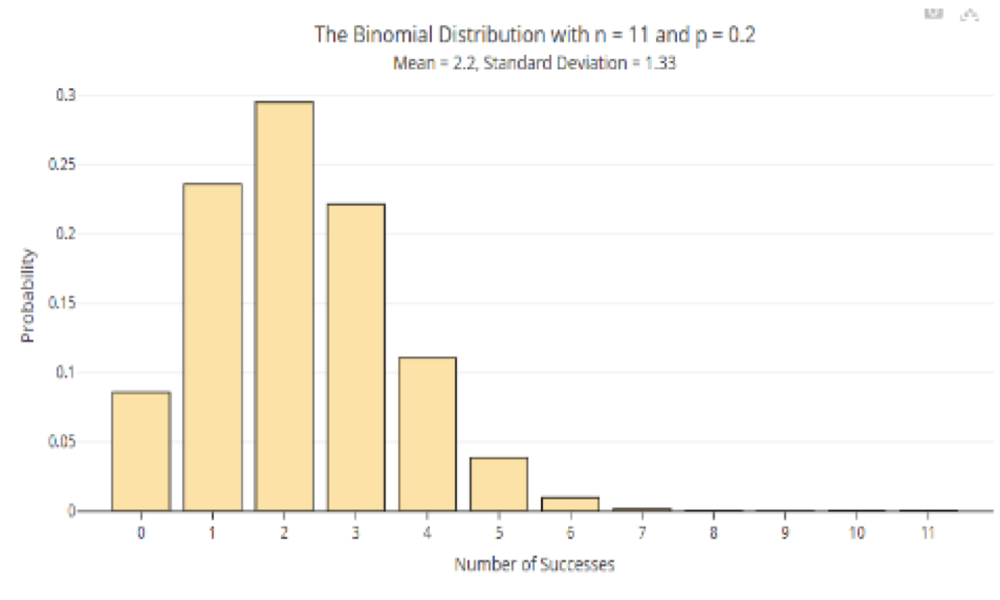
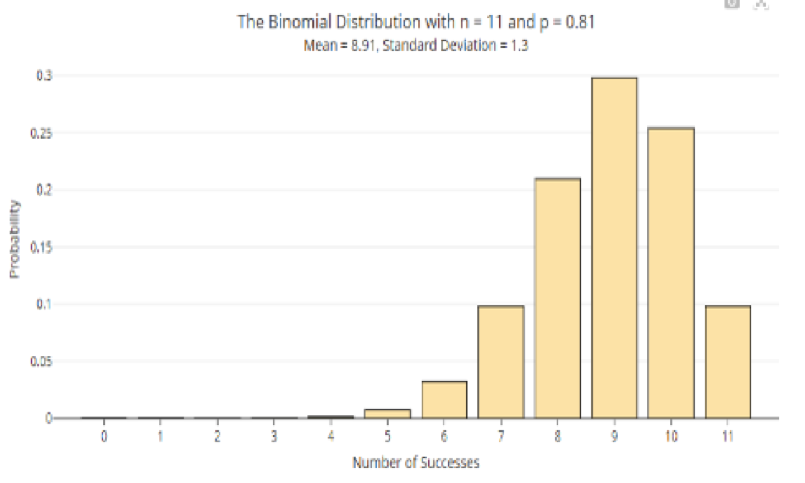
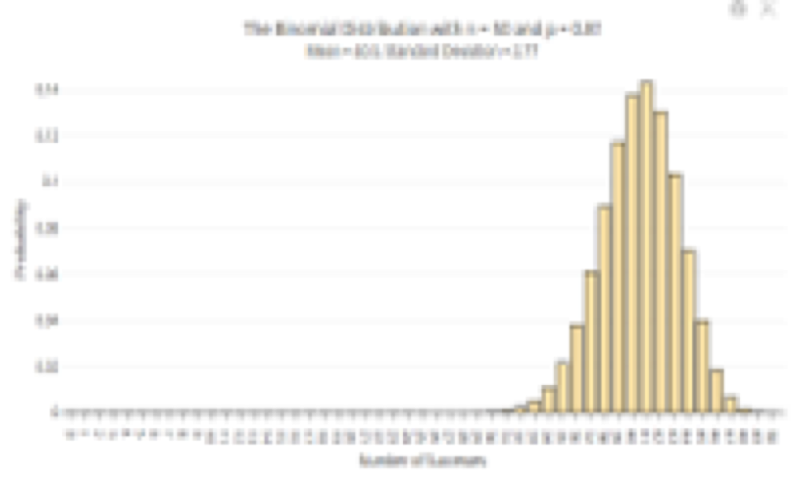
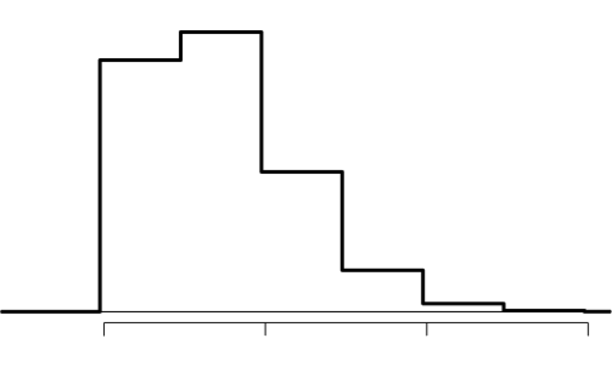
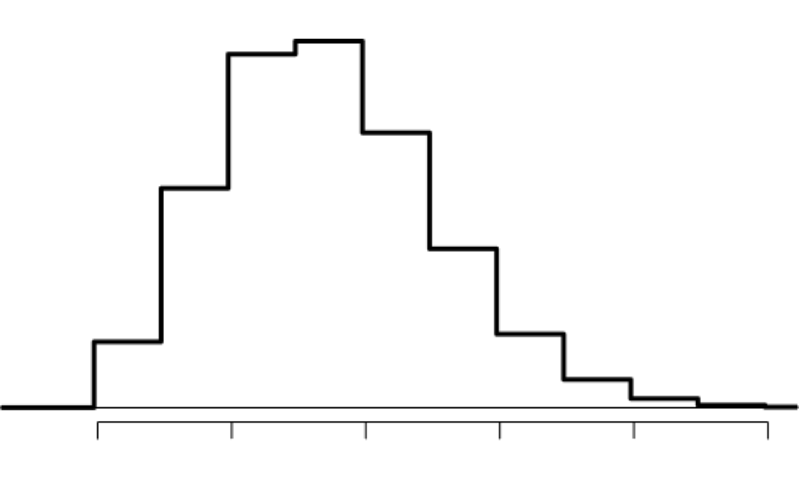
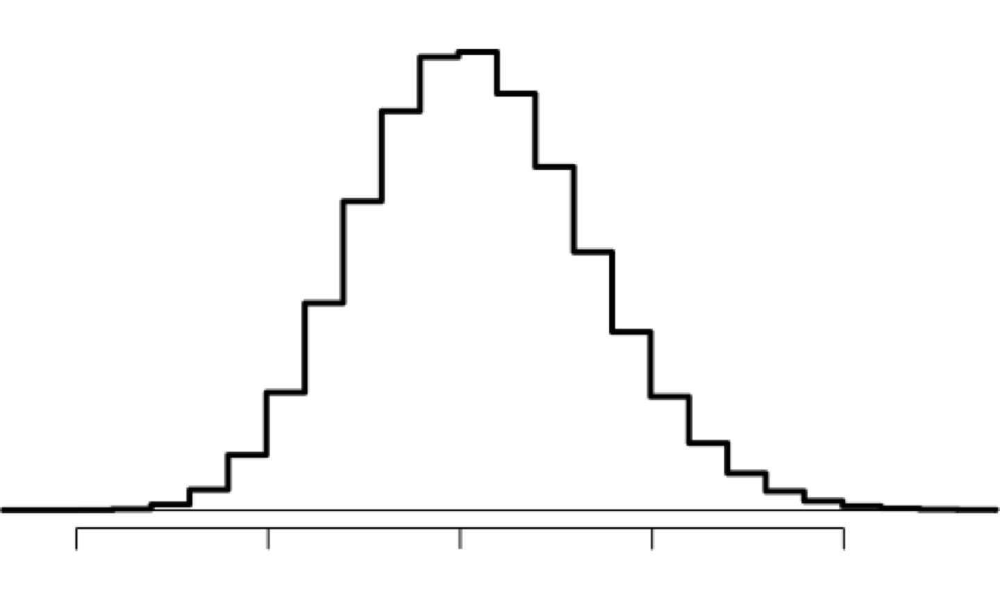
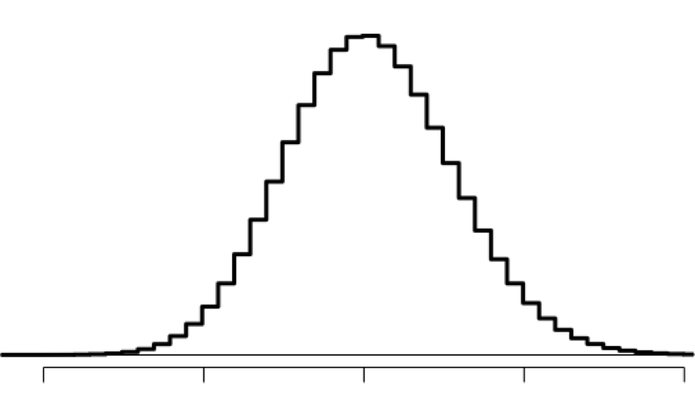

These notes use content from OpenIntro Statistics Slides by
Mine Cetinkaya-Rundel.
These notes use content from OpenIntro Statistics Slides by
Mine Cetinkaya-Rundel.
Binomial distribution is a discrete probability distribution of the number of successes in a sequence of \(n\) independent experiments, each with its own two outcomes: success (with probability \(p\)) failure (with probability \(q=1-p\)).
Binomial distribution is determined by parameters \(n\) and \(p\).
- Binary Data — For each trial or observation, there are two possible outcomes (dichotomous responses) for example, Success/Failure; Accept/Decline an offer; vote Yes/No
Bernoulli Trials — For repeated \(𝑛\) trials
Binomial Random Variable — For Bernoulli trials of 𝑛 times, in which we observe a binary data, let \(𝑋\) be the number of getting success, then \(X\) is a binomial random variable, and the possible values \(x=0, 1, \dots,n\)
Binomial Distribution — the probability distribution for Binomial Random Variable— there will be a formula for this
Assume that 35 % of people do not use iPad. Suppose we randomly select four (4) individuals, What is the probability that exactly one (1) of them does not use iPad?
Let’s call these people Allen (A), Brittany (B), Caroline (C), and Damian (D). Each one of the four scenarios below will satisfy the condition of “exactly 1 of them do not use iPad”:
The probability of exactly one 1 of 4 people does not use iPad is the sum of these probabilities. 0.0961 + 0.0961 + 0.0961 + 0.0961 = 4 × 0.0961 = 0.3844
The question from the prior slide asked for the probability of given number of successes, k, in a given number of trials, n, (k = 1 success in \(n=4\) trials), and we calculated this probability as
\[{\# of scenarios \times P(single scenario)}\] - \(\#\) of scenarios: there is a less tedious way to figure it out, we’ll get to that shortly…
probability of success to the power of number of successes, probability of failure to the power of number of failures.
\(\normalsize\) The Binomial distribution describes the probability of having exactly \(k\) successes in \(n\) independent Bernoulli trials with probability of success \(p\).
\[P(X=k) = {n \choose k}p^k(1-p)^{(n-k)} = \frac{n!}{k! \cdot (n-k)!}p^k(1-p)^{(n-k)}, k=0,1,2,...n\]
In the probability formula for binomial distribution, \(𝑛!\) is read as \(𝒏\) factorial : \(𝑛!=1×2×3×…×𝑛\) for any positive inter $𝑛 $
\(0!=1\)
While \({n \choose k}\) is the combination, it shows the total possible ways of choosing \(𝑘\) items from a collection of \(𝑛\) items without ordering.
Example:
\({4\choose 1}=\frac {4!}{1!3!}=4\), say, take a quiz with 4 questions, there are four ways of getting exactly 1 correct: CIII, ICII, IICI, IIIC.
\({3\choose 2} =\frac{3!}{2!1!}=3\), say, given three fruits: an apple, an orange, and a pear, there are three ways that two fruits can be drawn from this set: apple and pear; apple and orange; orange and pear.
The choose function is useful for calculating the number of ways to choose \(k\) successes in \(n\) trials.
\[{n \choose x} = \frac{n!}{k! \cdot (n-k)!}\] * \(k=7, n=9: {9 \choose 7} = \frac{9!}{7!(9-7)!} = \frac{9 \times 8 \times 7 }{7 \times (2 \times 1)} = 36\)
Note: You can also use R for these calculations:
factorial(9) #calculates 9! choose(9,2) #calculates 9 choose 2
For any \(0≤𝑘≤𝑛\),
\[{n \choose k}= \frac{𝑛!}{𝑘!(𝑛−𝑘)!} \ \text{is equal to} \ {n \choose n-k} = \frac{𝑛!}{𝑘!(𝑛−𝑘)!}\]
In other words, \(𝑛\) choose \(𝑘\) is the same as not choose \(𝑛−𝑘\).
Example
When \(𝑘=0, {n \choose 0} = {n \choose n} = \frac{𝑛!}{𝑛!0!}=1\)
When \(𝑘=1, {n \choose 1} = {n \choose n-1} = \frac{𝑛!}{𝑛-1!1!}=n\)
Then, \({7\choose 1}={7\choose 6}, {7\choose 2} = {7\choose 5}, \ \text{and}\ {7\choose 3} = {7\choose 4}\)
Example: Historical data shows that about 51% of newborn babies are boys. If we randomly select four newborns, build the binomial model for the possible number of boys.
Solution. Let \(X\) be the number of boys in sample of \(n=4\) newborns. Then, the possible values of \(X\) are \(0, 1, 2, 3, 4\), with \(p=0.51\).
Check: for the part in red in class (using R)choose(4,0) * 0.51^0 * (1-0.51)^4 #calculates P(X=0) choose(4,1) * 0.51^1 * (1-0.51)^3 #calculates P(X=1) P_x_le_1 = 0.0576 + 0.2400; P_x_le_1 #calculates P(X<=1)

\[ \begin{align*} x \hspace{0.2cm}& \hspace{0.2cm} P(X=x) & \hspace{0.2cm} P(X\le x) \\ 0 \hspace{0.2cm}& \hspace{0.2cm} \color{red}{0.0576} & \hspace{0.2cm} \color{red}{0.0576}\\ 1 \hspace{0.2cm}& \hspace{0.2cm} \color{red}{0.2400} & \hspace{0.2cm} \color{red}{0.2976}\\ 2 \hspace{0.2cm}& \hspace{0.2cm} 0.3747 & \hspace{0.2cm} 0.6723\\ 3 \hspace{0.2cm}& \hspace{0.2cm} 0.2600 & \hspace{0.2cm} 0.9323\\ 4 \hspace{0.2cm}& \hspace{0.2cm} 0.0677 & \hspace{0.2cm} 1.000\\ \end{align*} \]
Example: Historical data shows that about 51% of newborn babies are boys. If we randomly select four newborns, build the binomial model for the possible number of boys.
Solution. Let \(X\) be the number of boys in sample of \(n=4\) newborns. Then, the possible values of \(X\) are \(0, 1, 2, 3, 4\), with \(p=0.51\).
Check: for the part in red in class (using R)dbinom(x = 0, size = 4, prob = 0.51) #calculates P(X=0) dbinom(1, 4, 0.51) #calculates P(X=1); we can drop the argument label pbinom(1, 4, 0.51, lower.tail = TRUE) #calculates P(X<=1)

\[ \begin{align*} x \hspace{0.2cm}& \hspace{0.2cm} P(X=x) & \hspace{0.2cm} P(X\le x) \\ 0 \hspace{0.2cm}& \hspace{0.2cm} \color{red}{0.0576} & \hspace{0.2cm} \color{red}{0.0576}\\ 1 \hspace{0.2cm}& \hspace{0.2cm} \color{red}{0.2400} & \hspace{0.2cm} \color{red}{0.2976}\\ 2 \hspace{0.2cm}& \hspace{0.2cm} 0.3747 & \hspace{0.2cm} 0.6723\\ 3 \hspace{0.2cm}& \hspace{0.2cm} 0.2600 & \hspace{0.2cm} 0.9323\\ 4 \hspace{0.2cm}& \hspace{0.2cm} 0.0677 & \hspace{0.2cm} 1.000\\ \end{align*} \]
Here are a few examples of the Histograms for \(𝑛=11\), various \(𝑝\).
What are your observations?




Which of the following is not a condition that needs to be met for the binomial distribution to be applicable?
Which of the following is not a condition that needs to be met for the binomial distribution to be applicable?
Assume that there’s an insurance agency where 70% of individuals do not exceed their deductible. What is the probability that 3 of 8 randomly selected individuals will have exceeded the deductible, i.e. that 5 of 8 will not exceed the deductible?
Solution. 𝑛 = 8. If we treat “not exceed deductible” as success, then there are 𝑘 = 5 successes , the probability of a success is 𝑝 = 0.7.
\[ \begin{eqnarray*} P(X = 5)&=&\binom{8}{5} (0.7)^5 (1-0.7)^{8-5}\\ &=& \frac{8!}{5!(8-5)!} (0.7)^5 (0.3)^3\\ &=& \frac{8!}{5!(3)!} (0.7)^5 (0.3)^3 \\ &=& 56 (0.7)^5 (0.3)^3\\ &=& 56 \times 0.00453789\\ &=& 0.2541218 \end{eqnarray*} \] If we treat “exceed deductible” as success, then there are 𝑘 = 3 successes, and the probability of a success is 𝑝 = 0.3.
\(P(X=3) = {8 \choose 3} \times 0.3^3 \times 0.7^5 = 0.2541218\)
Thus, the probability that 3 of 8 randomly selected individuals will have exceeded the insurance deductible is 0.2541 or 25.41%.
Assume that there’s an insurance agency where 70% of individuals do not exceed their deductible. What is the probability that 3 of 8 randomly selected individuals will have exceeded the deductible, i.e. that 5 of 8 will not exceed the deductible?
Solution. \(𝑛 = 8\). Let’s use R. If we treat “not exceed deductible” as success, then there are \(𝑘 = 5\) successes , the probability of a success is \(𝑝 = 0.7\).
dbinom(x = 5, size = 8, prob = 0.7) #calculates P(X=5) dbinom(5, 8, 0.7) #we can drop the argument label
If we treat “exceed deductible” as success, then there are \(𝑘 = 3\) successes, and the probability of a success is \(𝑝 = 0.3\).
dbinom(3, 8, 0.3) #we can drop the argument label
For binomial distribution with 𝑛 and 𝑝, it can be proved that \[\text{Mean} = \mu = np\] \[\text{Variance} =\sigma^2 = np(1-p)\] \[\text{The standard deviation} = \sigma = \sqrt{np(1-p)}\]
Note: Mean and standard deviation of a binomial variable might not be whole numbers.
Example. A 2012 Gallup survey suggests that 26.2% of Americans are obese. Among a random sample of 100 Americans, how many would you expect to be obese? What is the standard deviation?
\[\mu = np = 100 \times 0.262 = 26.2\]
\[\sigma = \sqrt{(np(1-p))} = \sqrt{(100\times0.262\times(0.738))} \approx 4.4\]
(Q. What is the variance)
We would expect averagely 26.2 out of 100 randomly sampled Americans to be obese, with a standard deviation of 4.4.
But this doesn’t mean in every random sample of 100 people, exactly 26.2 will be obese. In fact, that’s not even possible. In some samples, this value will be less, and in others more.
How much would we expect this value to vary?
Rule: observations that are more than 2 standard deviations away from the mean are considered unusual
In previous slide, the mean was 26.2, and the standard deviation was 4.4, we can calculate a range for the plausible number of obese Americans in random samples of 100.
\[𝜇±2𝜎=26.2 ± (2 × 4.4) = (17.4, 35)\] So, for a random sample of 100 Americans, the percent of number of obese Americans are usually between 17.4 and 35.
The percent either below 17.4 or higher than 35 would be considered unusual.
We may use a web applet to explore. Go to https://istats.shinyapps.io/BinomialDist/ and choose your “the number of Bernoulli Trials(n)” and “probability of Success (p)” or you may enter 𝑛 and 𝑝.
Try different 𝑛, with 𝑝=0.5
Try p close to 0 (𝑝=0.1) or 1(𝑝=0.95) with different 𝑛 (small or large)
Further considerations: - What happens to the shape of the distribution as 𝑛 stays constant and 𝑝 changes?
Hollow histograms of samples from the binomial model where𝑝 = 0.10 and 𝑛 = 10, 30, 100, and 300.
What happens as 𝑛 increases (large n ) ?




𝑛𝑝 ≥ 10 and 𝑛(1 − 𝑝) ≥ 10 (some may use 𝑛𝑝 ≥ 15 and 𝑛(1 − 𝑝) ≥ 15)
If 𝑛 is large enough as checked above, the graph of binomial distribution is approximately bell-shaped.
Below are four pairs of Binomial distribution parameters. Which distribution can be approximated by the bell-shaped curve?